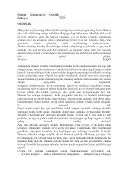

OOg'ir sinovlardan o'tib ozodlik va baxt topgan insonning hayotiy yo'li.
Shukur Xolmirzayevning ushbu hikoyasi inson taqdiri, qiyinchiliklar va ozodlikka erishish yo'lidagi kechinmalar haqida hikoya qiladi. Asar bosh qahramon Mansurning hayotidagi murakkab burilishlar, qamoqdan keyingi hayot kurashlari va topgan baxti orqali chuqur ijtimoiy-psixologik manzaralarni ochib beradi.